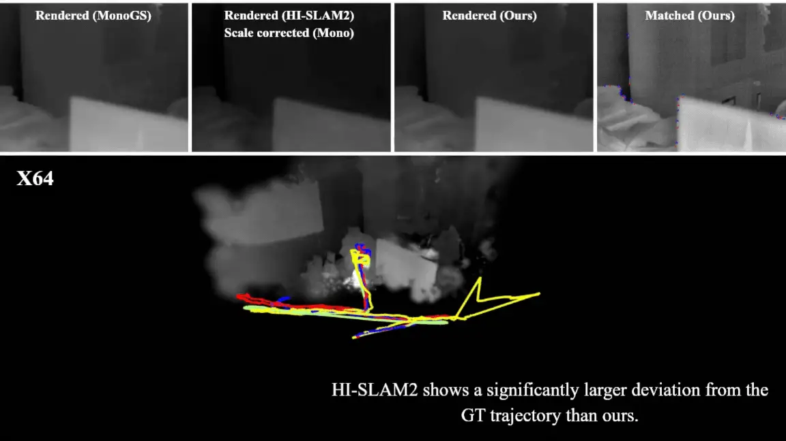
Physics-Informed Edge-Aware Thermal Gaussian Splatting SLAM
The first thermal-depth 3D Gaussian Splatting SLAM framework. It tracks edges, not intensities, so it keeps working where photometric SLAM loses track.
1 GIST2 Holiday Robotics3 Ajou University
† Corresponding author
Thermal cameras see in the dark and through illumination changes, but their images are low-contrast, texture-sparse and noisy. SLAM that relies on photometric alignment or point features breaks down on them. PI-EAT-SLAM takes thermal + depth input and tracks the camera with robust geometric edges. A Stefan-Boltzmann rescaling step restores contrast using the physics of thermal radiation. A multi-stage Gradient-aware Edge-KLT (GE-KLT) tracker keeps only reliable edge correspondences, and an edge-aware smoothness loss keeps the 3D Gaussian map sharp at boundaries and smooth elsewhere.
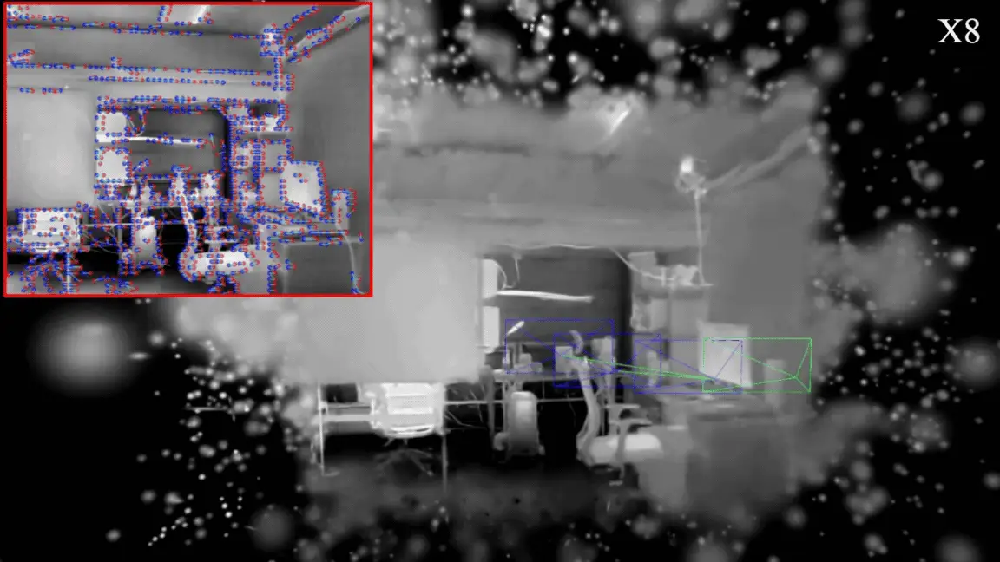
Converts raw 16-bit thermal values to temperature, then to radiance L ∝ T⁴, before normalizing to 8 bits. Contrast goes up without boosting noise.
KLT tracking, then nearest-edge matching, then dual-constraint outlier rejection (distance + gradient direction). Only reliable edge pairs drive the pose.
Smooths flat regions to suppress thermal radiance artifacts, but backs off near strong gradients so geometric boundaries stay sharp.
Conventional SLAM relies on point feature matching or photometric loss. Both degrade in low-contrast, feature-sparse thermal images. Existing thermal SLAM often adds an IMU or LiDAR, which brings time synchronization, calibration and payload costs.
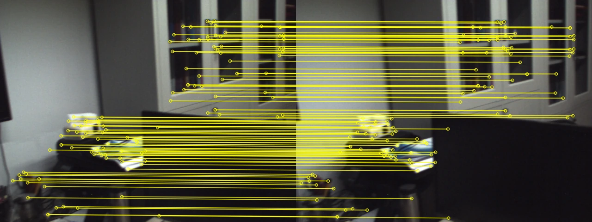
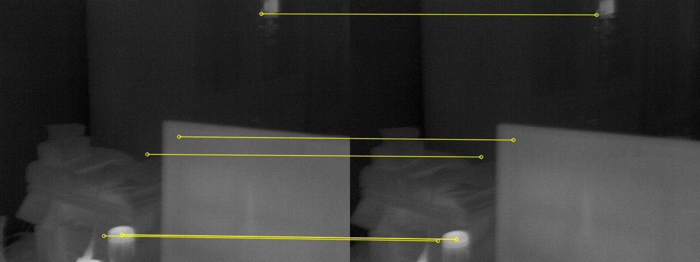
RGB: dense texture gives many point matches.
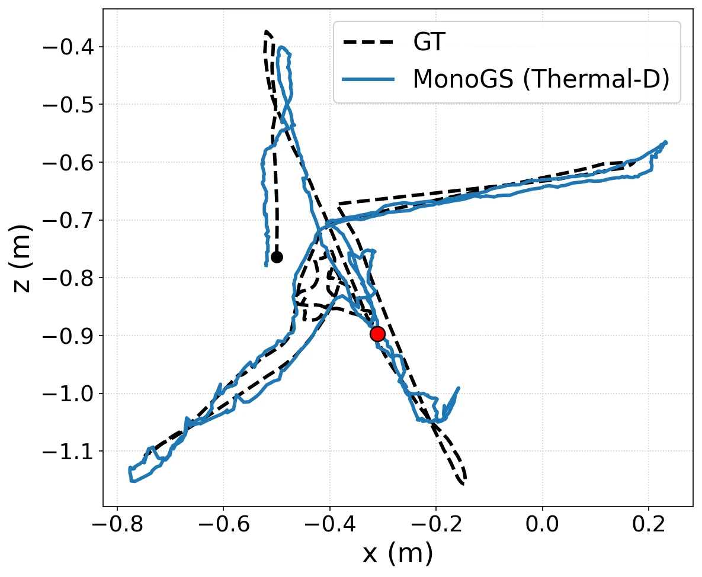
Photometric GS-SLAM follows the ground truth (dashed) for a while, then loses track. The red marker shows where it fails.
Click a block to see what it does and jump to the details.
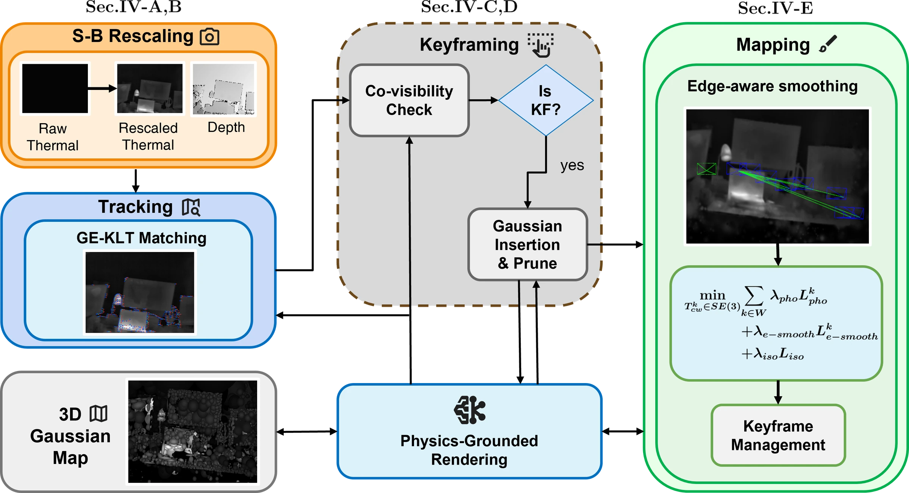
Each numbered block maps to a section of the paper.
Thermal sensors record 14/16-bit data that must be squeezed into 8 bits for tracking. Linear min-max scaling of raw intensities loses thermal detail. We first convert each raw value to absolute temperature \(T\) using the camera manufacturer's formula, then to radiance with the Stefan-Boltzmann law, and normalize the radiance to 8 bits. The constants \(\epsilon\) and \(\sigma\) cancel in the normalization, so exact emissivity is not needed. CLAHE and a bilateral filter then boost local contrast and attenuate noise.
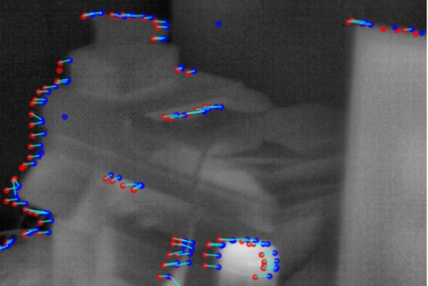
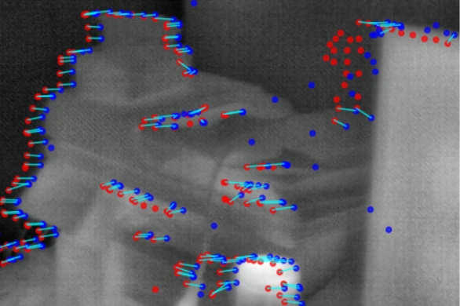
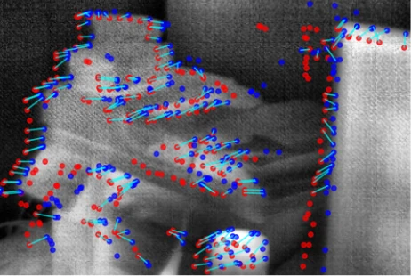
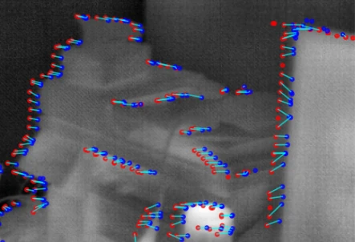
S-B rescaling (ours): boosts contrast without amplifying noise, giving accurate matches along physical boundaries.
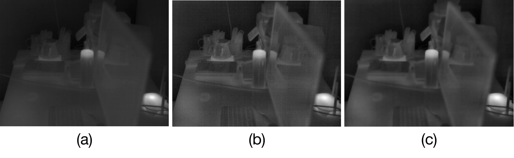
Photometric alignment is fragile on thermal images. GE-KLT combines KLT tracking, which uses local patch appearance, with high-confidence Canny edges, and filters the results in three stages. Step through the pipeline below; the full-frame examples come from the Multi-spectral dataset.
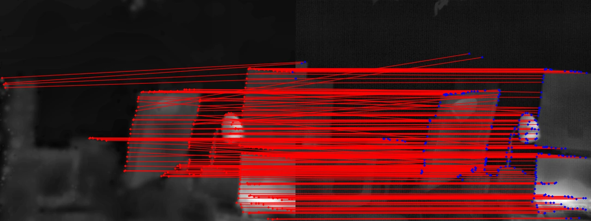
Rendered imageGT image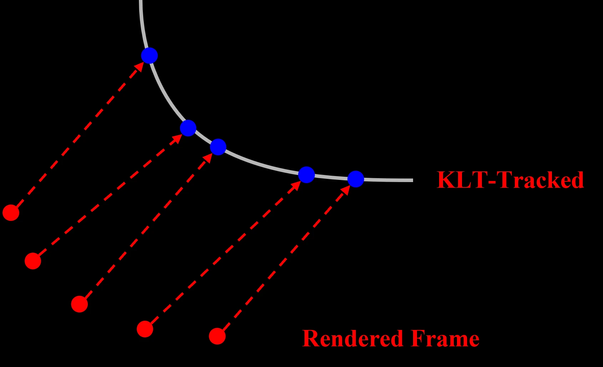
Standard smoothness losses also smooth away important geometric boundaries. Ours weights the smoothness term by \(1-w_{\text{edge}}\): it smooths non-edge regions to suppress thermal radiance artifacts and keeps sharp boundaries in the rendered images.
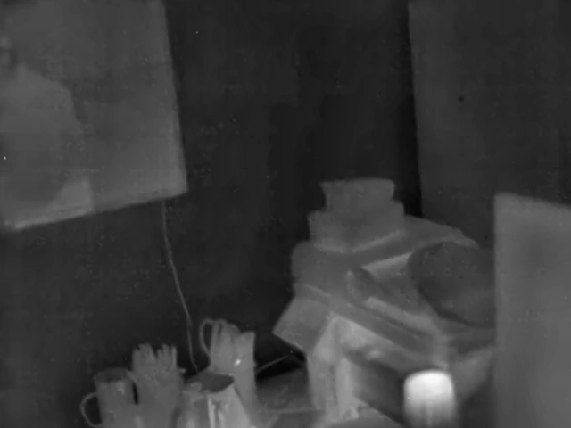
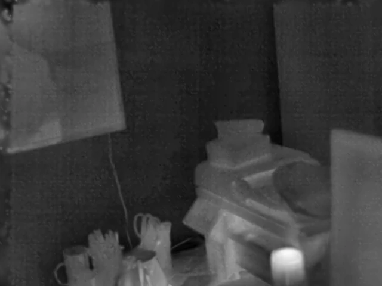
To improve rendering fidelity without extra optimization overhead, we plug in the pre-trained Atmospheric Transmission Field (ATF), which suppresses floating artifacts, and the Thermal Conduction Module (TCM), which sharpens blurred boundaries, both from Thermal3D-GS.
We evaluate on the public Multi-spectral dataset (hardware-synchronized thermal + RGB-D, 120 Hz OptiTrack ground truth; Bright = stable lighting, Varying = random light toggling) and on a custom monocular thermal dataset captured with a DJI Mavic 3T thermal camera and OptiTrack ground truth.
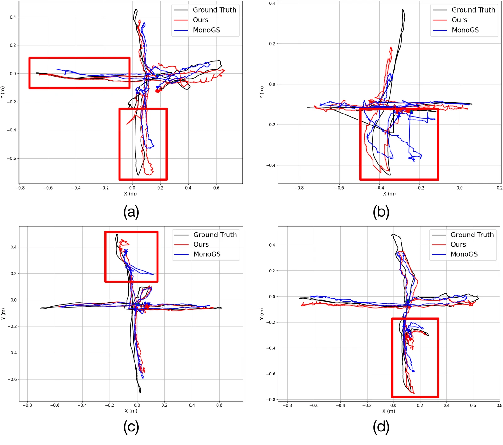
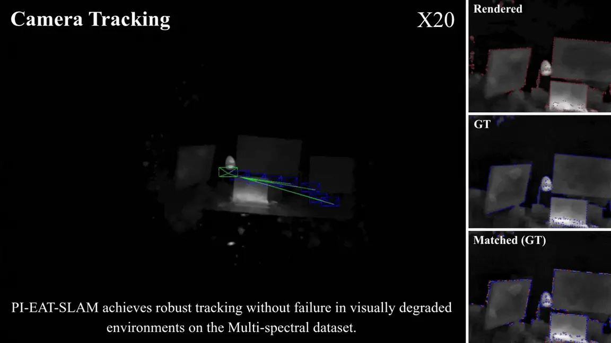
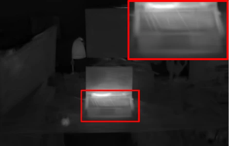
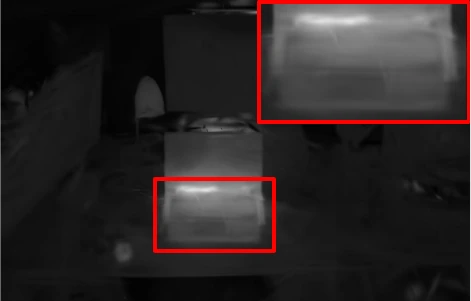
MonoGS blurs edges and loses local detail such as the laptop keypad and the person's hair (red boxes). Ours keeps sharp structural boundaries and fine geometric detail.
On PSNR/SSIM/LPIPS, MonoGS scores higher on most sequences because it directly minimizes photometric loss, while our preprocessing deliberately changes intensity distributions to favor tracking. That trade-off is what lets us track on dark ds2-xyz, where MonoGS fails to initialize.
Sequences are Easy (translation-dominant, feature-rich) or Difficult (rotation-dominant, feature-sparse). PI-EAT-SLAM targets thermal-depth input. With no open-source thermal-depth baselines available, we run it monocular here, which is harder for it, and compare against TI-SLAM (without IMU), MonoGS, HI-SLAM2 and ORB-SLAM3.
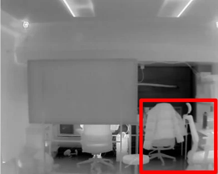
GT (red box = zoom region)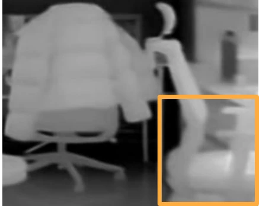
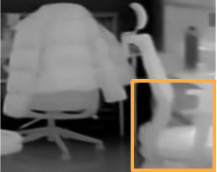
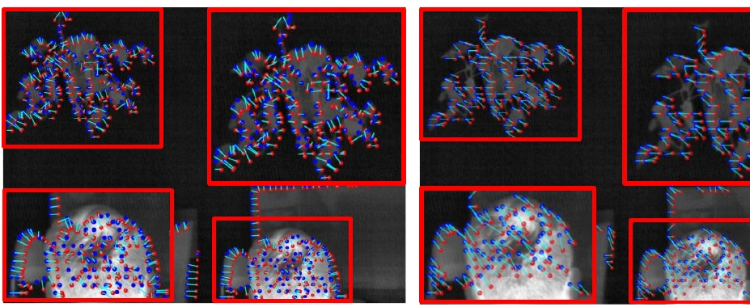
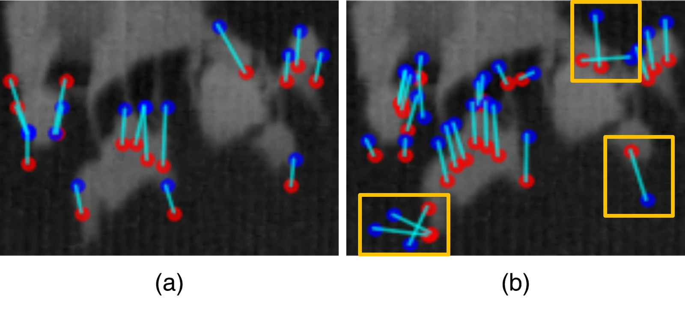
@inproceedings{kim2026pieatslam, title = {{PI-EAT-SLAM}: Physics-Informed Edge-Aware Thermal Gaussian Splatting {SLAM}}, author = {Kim, Junpyo and Yeom, Seonwook and Yang, Seonmo and Ham, Jungil and Shin, Hyeonji and Kim, Changhyeon and Lee, Hyeonbeom and Kim, Pyojin}, booktitle = {IEEE/RSJ International Conference on Intelligent Robots and Systems (IROS)}, pages = {6729--6736}, year = {2026} }
Acknowledgements: this work was supported by the National Research Foundation of Korea (NRF) grant funded by the Korea government (MSIT) (No. RS-2024-00358374) and the Global University Project grant funded by GIST in 2025.